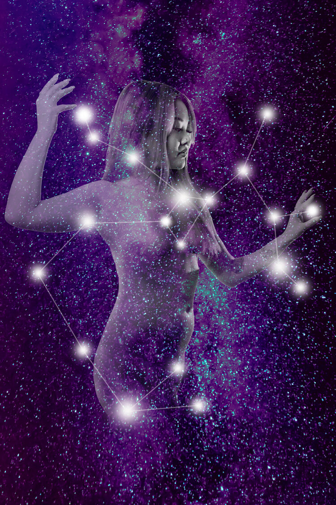
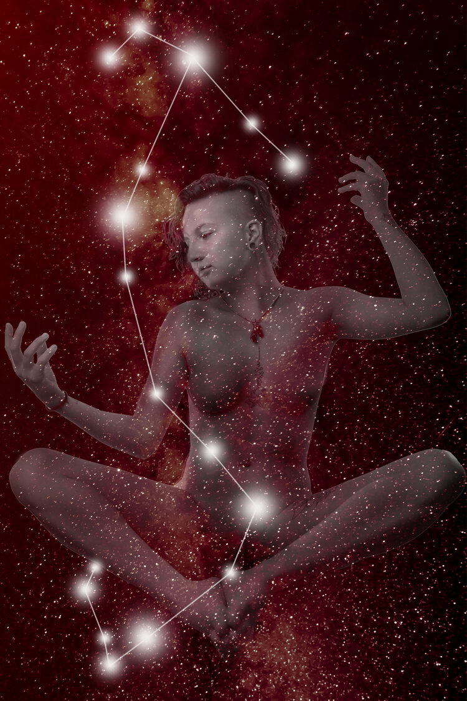
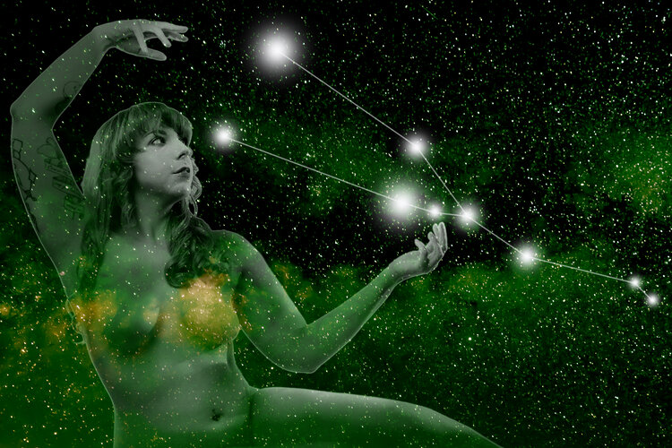
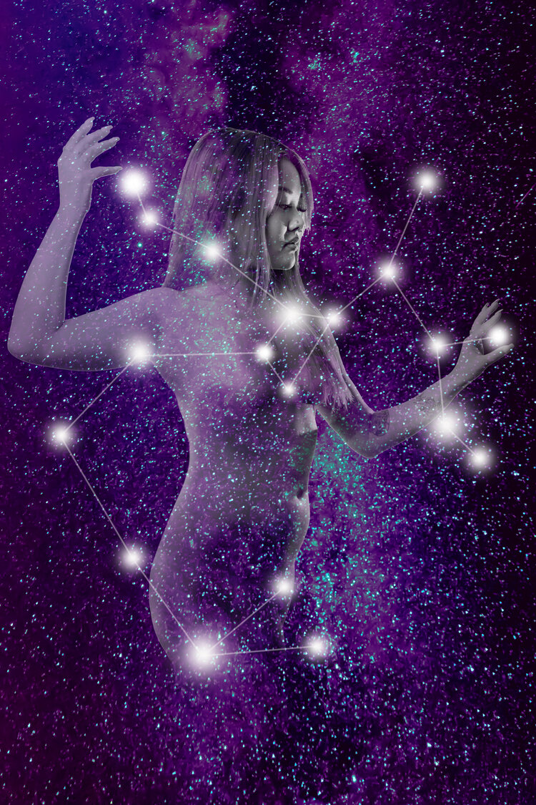
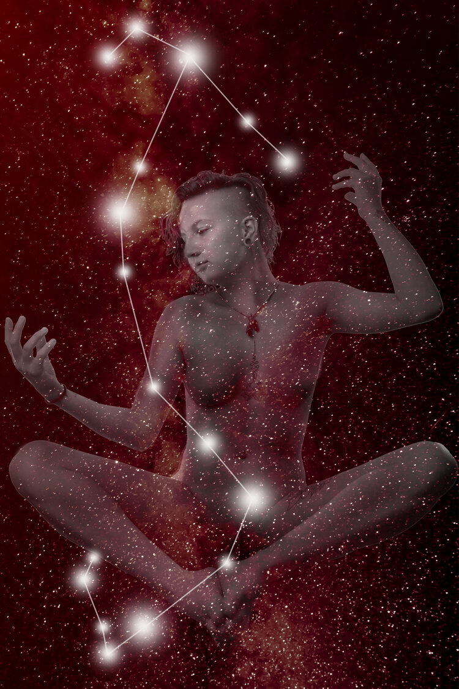
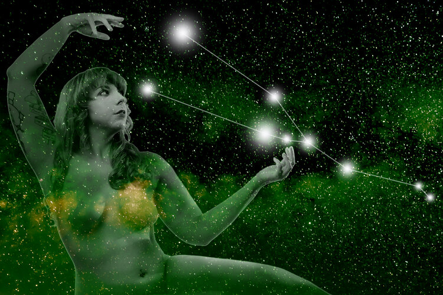
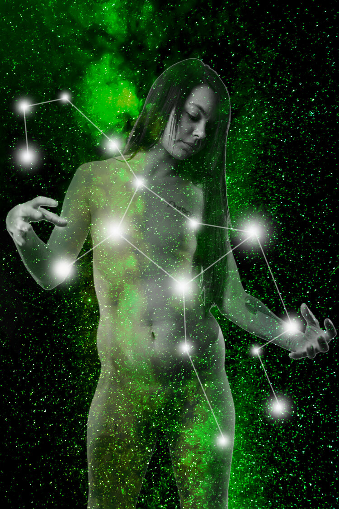
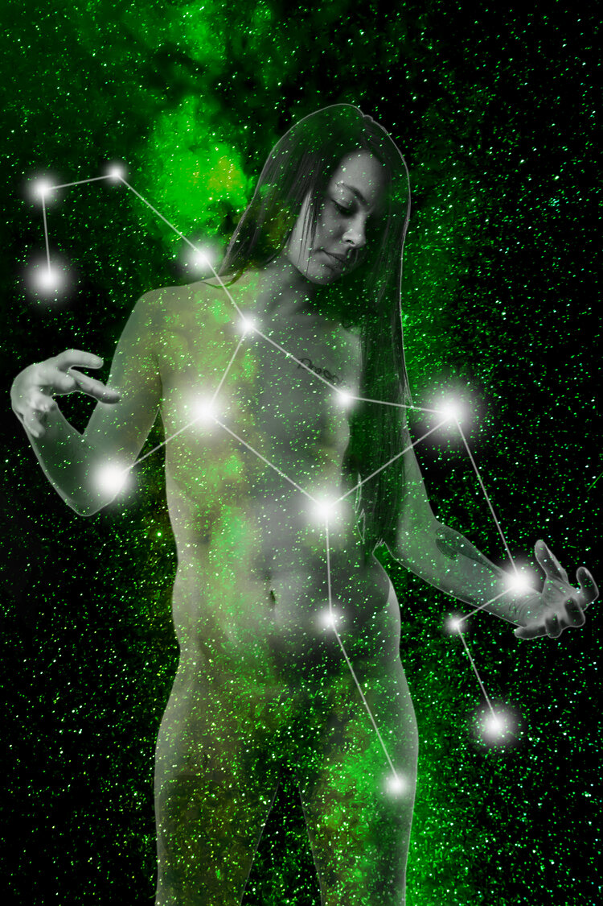

Blood and Foundations
The last several years haven’t exactly been the best example of race relations in this country. I noticed that the people who were complaining generally about athletes kneeling for the National Anthem, seemed to have a disconnect that I don’t know how to effectively point out.
It’s hard to tell someone their actions or words are racist without inciting severe anger, and once someone has gotten angry, the chances of a reasonable debate are gone. The American flag flies above a foundation that was built by slaves, and is bloodied by the injustices that still permeate the systems we all depend on today. To top it off, to have white people telling them to stand for that flag or lose their job is just yet another injustice to add to a long list.
 





 
